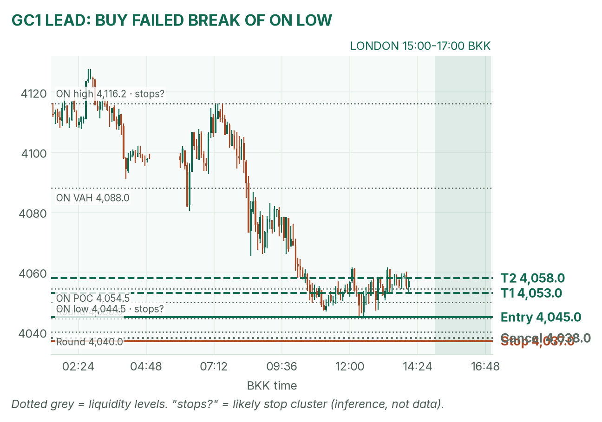
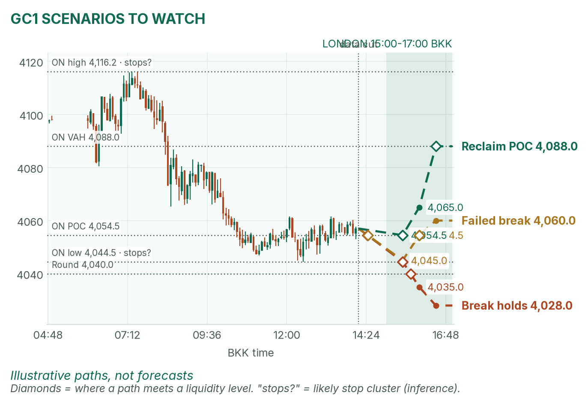
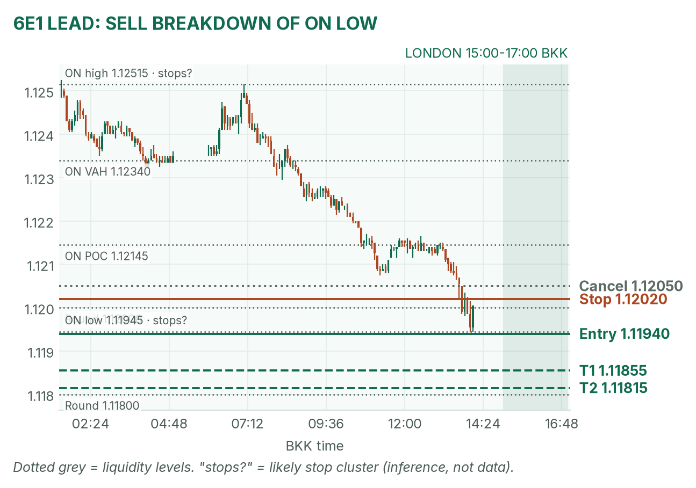
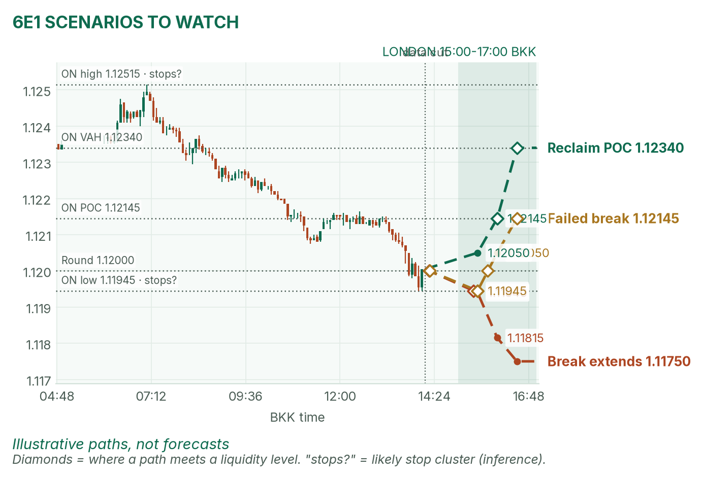

Gold sat on its overnight low. The euro made a fresh one. Williams talks inside the window.
Window 15:00–17:00 BKK (UK on GMT). Data cut 14:10 BKK: GC 4,055.2, 6E 1.11980 (TopstepX Z26, last complete 1m). Levels only. Ideas, not advice.
Summary
GC: buy a failed break of the overnight low. Entry 4,045, stop 4,037, target 4,058 (1.6R). About 36%.
6E: sell a break below the overnight low. Entry 1.11940, stop 1.12020, target 1.11815 (1.6R). About 35%.
Williams speaks at 16:30 BKK — inside the window. No-trade 16:25–16:32. Prefer flat by 16:25.
Payrolls at 20:30 BKK are after the window. Consensus ~65,000 (prior 29,000).
The market story
Thursday's AI sell-off went global. Asia's chip hubs fell hard, and the VIX (a fear gauge from S&P 500 options) closed at 28.18. Nasdaq futures bounced from a deep overnight low — a repair, not clean risk-on (April).
Gold slid about 1.5% from Thursday's settle. Oil bounced; markets still lean toward a December Fed rate rise — a rate is the price of money, and gold pays none. Gold peaked at 4,116.2 (07:24 BKK), fell to 4,044.5 (12:30 BKK), and now sits near the overnight POC (busiest price).
The euro faded with a firmer dollar: high 1.12515 (07:08), fresh low 1.11945 (~14:04), under April's earlier 1.12075 print.
How I read it: gold is stretched lower on a stop pile at 4,044.5. The euro is soft at its low. London can be a normal range day — but Williams at 16:30 cuts the usable window short.
News (BKK)
Time
Event
Forecast
Prior
Read
15:00
London / Frankfurt open
—
—
Mark the 30m range.
16:30
NY Fed Williams speaks
—
—
Inside window. Hawkish tone lifts the dollar; cold for gold and the euro.
20:30
US payrolls (October)
~65k; UE 4.2%; AHE +0.3% m/m
29,000
After window. Hot locks hike odds (cold for GC/6E); soft does the opposite.
No-trade zone: 16:25–16:32 (Williams). Be flat by 16:25 unless you plan to hold the speech. Payrolls are after London.
Levels to watch
Level
GC
6E
Overnight high / low (from 06:00 BKK reopen)
4,116.2 / 4,044.5
1.12515 / 1.11945
Overnight value area (~70% of trading)
4,046–4,088
1.11980–1.12340
Overnight POC (busiest price)
4,054.5
1.12145
Thursday Globex high / low
4,155.8 / 4,067.0
1.12850 / 1.12195
Thursday POC
4,112.5
1.12365
Typical window range (median / 80th pct, ~19 days)
15.7 / 22 pts
20.5 / 26.5 pips
Gold (GC1)
Bias: down after the overnight slide, but stretched near the low. London gold fades the 15:00–15:30 range edges back toward the POC. Below 4,044.5 sit sellers' stops (inferred).
The trade: buy a failed break of the overnight low
Entry
4,044.5–4,045.5 (plan 4,045): after 15:30, price trades under 4,044.5, then a 5m bar closes back above it
Stop
4,037: under the sweep. A sweep is a quick dip that grabs stops and reverses
Targets
1R partial 4,053 · full target 4,058, just above the overnight POC (1.6R)
Cancel
Sweep reaches 4,038 (no room), no fill by 16:15, or Williams zone with no fill
Probability
~36%, an estimate. Basis: London gold edges mostly snapped back to the POC in my study (not significant); 13 points fits a typical window.
Why: stops below a session low often fuel a snap-back to the POC. April: partial agree — she flags losing 4,044.5 as a deeper give-back if the break holds. If gold holds below 4,044.5 on 15-minute closes, no long.

GC 5-minute bars to 14:10 BKK, window shaded. Slide from 4,116.2 into 4,044.5, then a bounce to the POC.

Illustrative paths, not forecasts: the break holds, a failed break back to the POC, or a fuller reclaim toward value-area high.
Scenarios to watch
Bearish break: 15m closes below 4,044.5 that stay there. Aims ~4,028–4,035.
Bullish reclaim: a 15m close back above 4,054.5 (POC). Aims for 4,088, the value-area high.
Euro (6E1)
Bias: soft. The dollar firmed into payrolls, and the session pressed a fresh overnight low. London 6E trades breaks of the 15:00–15:30 range.
The trade: bearish range breakout
Entry
1.11935–1.11945 (plan 1.11940), on a 5m close below the 15:00–15:30 range low and 1.11945
Stop
1.12020: back inside overnight value, so the break failed
Targets
1R partial 1.11855 · full target 1.11815, toward the 1.1180 round (1.6R)
Cancel
A 5m close above 1.12050 before entry, no fill by 16:20, or Williams zone with no fill
Probability
~35%, an estimate. Basis: euro London breakouts averaged +0.31R in my study (26 sessions, not significant); 12.5 pips ~60% of a typical window.
Why: follows the session's selling into a firmer dollar. April: agrees on a soft euro; price has since made a lower low. If it closes back above 1.11945 within 15 minutes, get out.

6E 5-minute bars to 14:10 BKK. The 07:08 spike to 1.12515 fully faded into a fresh low at 1.11945.

Illustrative paths, not forecasts: a break toward 1.1180, a failed breakdown back to the POC, or a fuller reclaim of value.
Scenarios to watch
Failed break: a poke under 1.11945 that closes back above it. Aims for 1.12145 (POC).
Bullish reclaim: a 15m close above 1.12050. Aims for 1.12340, the value-area high.
NQ (not traded in London): 26,905, between 26,366.50 and 27,159.25 — repair bounce, fragile into payrolls.
Before you click
ORB bases. GC London: 15:00–15:30 range, fade to POC. 6E London: 15:00–15:30 range, trade breakouts.
Checklist. 1) Room to today's max loss? 2) Within daily rules? 3) No release within 30 minutes? (Williams 16:30 — respect 16:25–16:32.) 4) Agrees with the bias? 5) At a marked level? 6) Setup tagged? 7) Entry, stop, 1R partial, target set? 8) Calm, not chasing?
Reset (60 seconds). Breathe in 4, hold 4, out 6, five times. Name the feeling in one word. Say the plan aloud. "Eager" or "frustrated"? Wait 5 minutes.
TopstepX Z26 bars, read-only; overnight from 06:00 BKK Globex reopen. Macro and calendar: April's pre-London brief (CNBC; NFP via forex.com/Arz360/Kinzan). Thursday NY scored: GC target, NQ target.